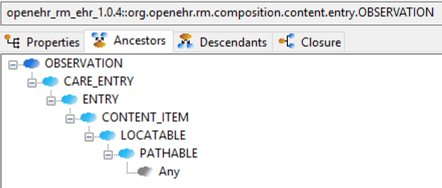
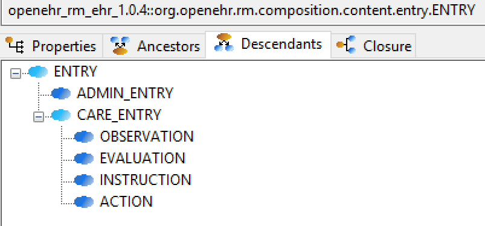
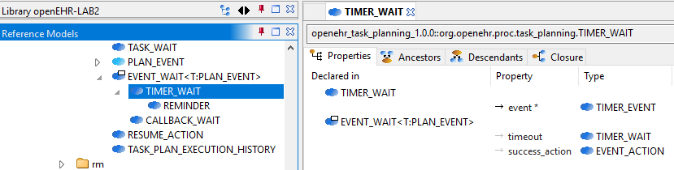
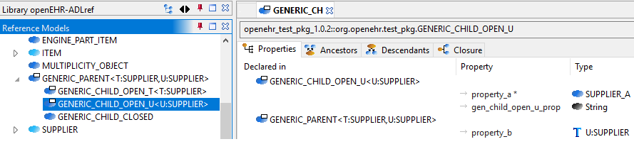
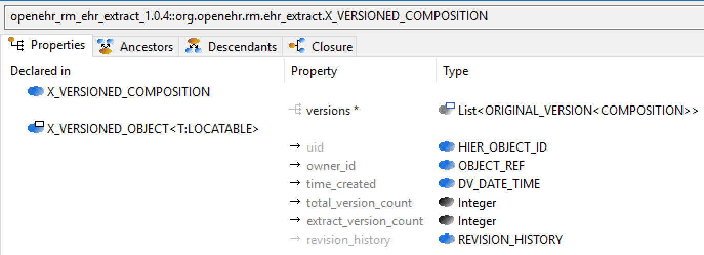
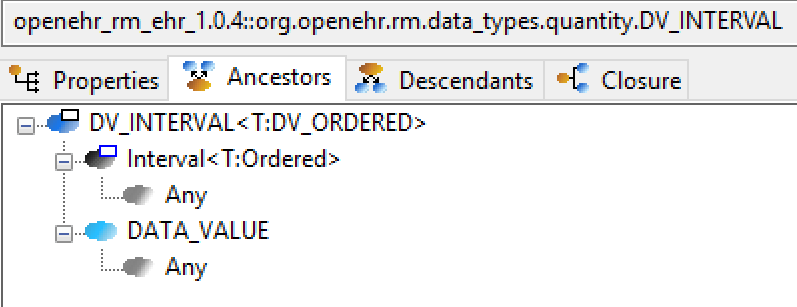

Model Semantics
This section describes various semantics that apply at a whole-of-model level rather than within single entities such as a class, type or property.
Inheritance
Simple Inheritance
The BMM supports single and multiple inheritance, although it does not distinguish between different types of inheritance relation as some programming languages do. Inheritance is formally defined to be between a class definition (an instance of BMM_CLASS) and a defined type, i.e. a BMM_SIMPLE_TYPE or BMM_GENERIC_TYPE. This is because the inheritance parents of a class may be any of:
-
a simple class;
-
a generic class;
-
a class type, i.e. the effective class definition corresponding to an effective generic type, which has one or more formal parameters substituted.
The general case for all three is represented by the corresponding type, i.e., a simple type or generic type.
The evaluation of inheritance relations defined in a BMM model results in an acyclic graph such that ancestors and descendants can be visualised for any class. The following screen shot shows the ancestors view of a class OBSERVATION.

The next screenshot shows the descendants view of one of the ancestor classes of the same class.

Generic Inheritance
Inheritance between generic classes works in the same way as for simple classes, with the additional semantics of formal parameter inheritance, which are as follows:
-
each unsubstituted formal parameter of the parent type must have a same-named counterpart in the formal parameters of the inheriting class;
-
the formal parameters of the inheriting class may further constrain any of the ancestor type’s formal parameters.
The following example shows the class DV_INTERVAL<T:DV_ORDERED> inheriting from Interval<T:Ordered>. Here the number of open generic parameters remains unchanged, while the type constraint Ordered is covariantly narrowed to DV_ORDERED, which inherits from the Ordered type.

The resulting types of lower and upper are now T:DV_ORDERED rather than T:Ordered from the parent. In the fully computed model shown above, these two properties are synthesised within DV_INTERVAL<T> with their new concrete types. Their BMM meta-type objects (type BMM_UNITARY_PROPERTY) will both have the meta-attribute is_synthesised_generic set to True and are marked with an asterisk within the property view to indicate this.
A simple class may also inherit from a closed generic type, with the parameters of the latter fixed to specific type(s), as shown in the following example.

In this case, The resulting type of event is TIMER_EVENT rather than T:EVENT from the parent. As in the previous example, this property has been synthesised new within TIMER_WAIT, with the meta-attribute is_synthesised_generic set True and is marked accordingly within the tool.
The general case is that any number of formal generic parameters may be substituted or left open down the inheritance lineage, as shown by the variant descendants of the class GENERIC_PARENT<T:SUPPLIER, U:SUPPLIER> in the following example.

Generic substitution may be with other open, closed or partly-closed generic types. The following example illustrates the inheritance by X_VERSIONED_COMPOSITION of X_VERSIONED_COMPOSITION<ORIGINAL_VERSION<COMPOSITION>>.

Multiple Inheritance
Multiple inheritance is typically used in the definition of classes that have a Liskov substitution inheritance relation as well as a re-use inheritance relation. The following shows a class DV_INTERVAL<T> multiply inheriting from Interval<T> and DATA_VALUE, where the latter is considered the substitutable type, and the former an interface re-use.
